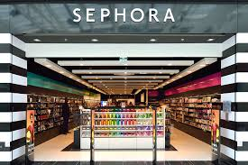
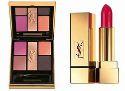
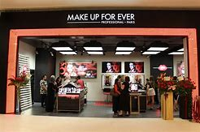
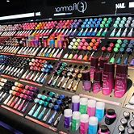
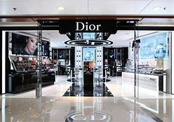
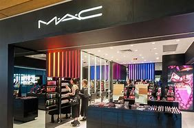
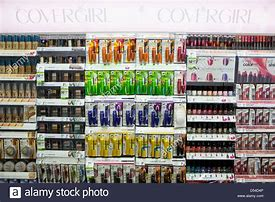

Sparkle
Most girls or mostly adults wear makeup some are simple some are for fun some are for important events like weddings or very fancy outings but some people are just obsessed with makeup so here is the perfect place for you to know prices and the latest collections stay tunned;)
- Sephora:
Sephora is a French multinational Paris-based chain of personal care and beauty stores founded in Limoges in 1969

- Yves saint laurent:
Yves Saint Laurent was a European fashion designer born on August 1, 1936 in Oran, Algeria. As a teen, he left for Paris to work for designer Christian Dior and gained acclaim for his dress designs. In 1966, he launched his own fashion labels, where his adaptations of tuxedos for women garnered him fame. He was the first living designer to receive a solo exhibition in New York’s Metropolitan Museum of Art in 1983. The Designer died in Paris on June 1, 2008 from brain cancer.
\
- Makeup forever:
Make Up For Ever is a French cosmetics brand owned by LVMH. It was created in 1984 by make-up artist Dany Sanz. LVMH acquired the brand in 1999 and accelerated its growth.

- Huda beauty:
Huda Beauty is a cosmetics line launched in 2013 by Iraqi-American businesswoman and makeup artist, Huda Kattan. The founder, Kattan, was chosen as one of "The 25 Most Influential People on the Internet" by Time in 2017, listed as one of The Richest Self-Made Women and one of the Top Three Beauty Influencers by Forbes. In the span of 5 years, the brand has built a positive reputation on some of its products, such as fake eyelashes series, a collection of foundation, and some face palettes.

- Flormar:
Founded in Milano, the capital of the fashion industry, Flormar was acquired by the Şenbay Family in the year 1970 and began production in Turkey. ... Flormar, as one of the world's leading make-up companies, also has a 21% share in the color cosmetics market of Turkey.

- Fenty beauty:
Fenty Beauty (stylized as FEИTY BEAUTY) is a cosmetics brand launched in September 2017 by singer Rihanna. The brand is popular for its broad inclusivity across skin tones and gender, especially its Pro Filt'R foundation. ... Fenty Beauty was named one of Time magazine's best inventions of 2017.

- Dior:
Christian Dior (French pronunciation: [kʁistjɑ̃ djɔːʁ]; 21 January 1905 – 24 October 1957) was a French fashion designer, best known as the founder of one of the world's top fashion houses, also called Christian Dior, which is now owned by Groupe Arnault.

- MAC
MAC, is a cosmetics manufacturer founded in Toronto, Canada in 1984 by Frank Toskan and Frank Angelo. The company is headquartered in New York City and became part of the Estée Lauder Companies in 1998. MAC is an acronym for Make-up Art Cosmetics.

- Covergirl:
coverGirl is an American cosmetics brand founded in Maryland, United States, by the Noxzema Chemical Company. It was acquired by Procter & Gamble in 1989 and later acquired by Coty, Inc. in 2016.

- Chanel:
That's a lot of people all going around smelling the same. It started life back in 1921 when Gabrielle 'Coco' Chanel was already reigning over the Paris fashion world. ... At the same time, Chanel started to expand and go global launching a cosmetics line (in 1924) and a range of skincare products (in 1929). products.Renowned for their inclusivity, Makeup Revolution products are extremely affordable and are focused on ensuring people of all genders, ethnicities, ages and locations can be a part of the revolution.
- L'oreal paris:
1909-1956 : The first steps, constructing a model. In 1909, Eugène Schueller, a young chemist with an entrepreneurial spirit, founded the company that was to become the L'Oréal group. It all began with one of the first hair dyes that he formulated, manufactured and sold to Parisian hairdressers.
 next
next